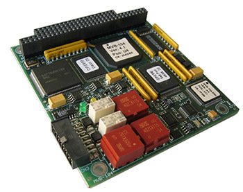

Railway Vehicle Tester
철도차량 시험기
철도의 안전 운행을 위해 차량을 정기 점검할 때는 부품별 시험 장치가 필요합니다. 엔에스텍은 이 시험기를 전문적으로 설계·제작·공급합니다.
철도의 안전 운행을 위해 차량을 정기 점검할 때는 부품별 시험 장치가 필요합니다. 엔에스텍은 이 시험기를 전문적으로 설계·제작·공급합니다.

철도 차량에 필요한 부품을 고객의 요구 사양에 따라 설계·제작·공급합니다.

철도의 안전을 위해 필요한 신호 부품을 고객 요구사항에 맞춰 제작하거나, 표준 제품으로 설계·제작·공급합니다.

열차 통신망(TCN)에서 차량 내 장치를 연결하는 다기능 차량 버스(MVB) 통신 모듈을 공급합니다.


선로변에 설치해 지나가는 열차의 주요 부위를 자동으로 측정하고 검사합니다.

차량과 대차에 장착된 상태로 휠셋을 가공합니다. 고객과 긴밀히 협력해 안전하고 효율적인 맞춤형 솔루션을 제공합니다.

차량에 별도 장치를 걸지 않고 전동차를 들어 올리는 장치입니다. 단일 차량 또는 연결된 차량 전체를 인양해 차량 수리나 대차 교체 작업에 사용합니다.

철도 차량용 파워 서플라이 기술을 바탕으로 산업용 전원과 대용량 전원을 설계·제작·공급합니다.

시스템 보호를 위해 설치하는 제품으로, 써지 보호기(SPD)와 써지 보호 및 낙뢰 보호용 변압기를 제작·공급합니다.